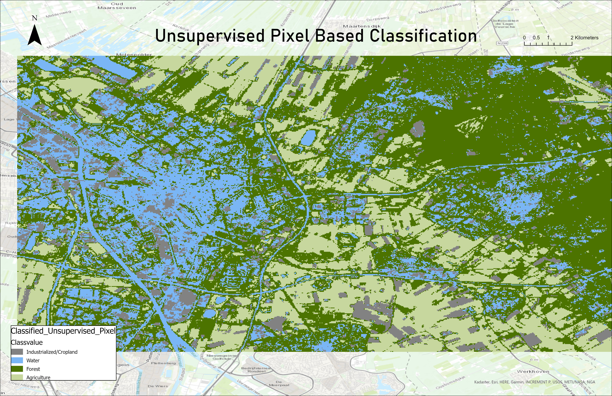
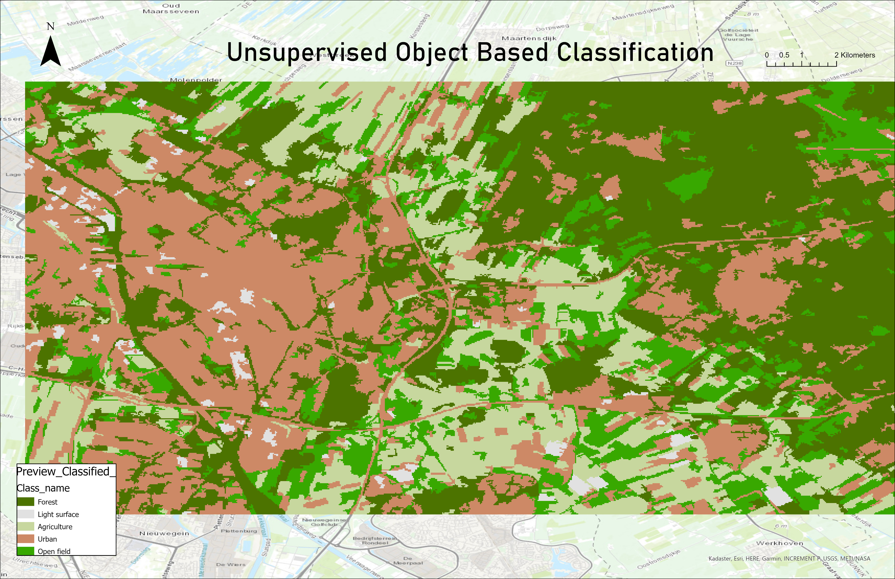
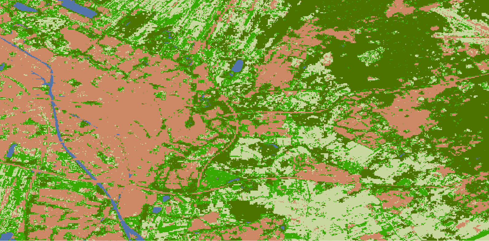
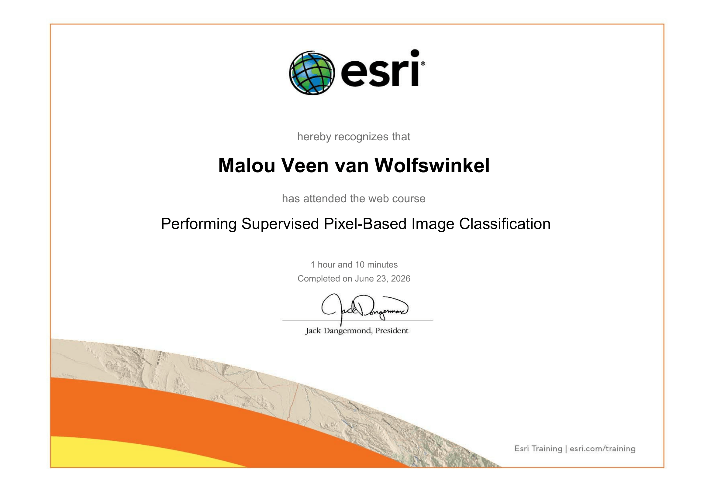
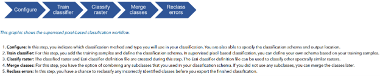
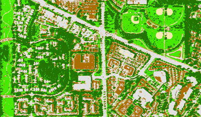

Land Use Classification
Mapping the land use of in the region of the City of Utrecht
The land cover of the Earth is what we see when we look down from the sky. It is the physical material at the surface of the earth. The manner in which this land is used is called land use, and has a significant influence on the environment. Thus, classifying land cover is an important part of environmental monitoring.
↓ Jump to course details and certificate
Project Overview
In this assignment, I will generate a land cover classification map for the region of the City of Utrecht, using the data collected by my classmates and I.
Theoretical Background
Automated land cover classification
Classifying land cover in an area used to require on-site data collection. This involves people spending hours determining
the type of land cover and recording this. With automated land cover classification this process is a lot faster, resulting in more data!
Two paradigms of classification are supervised and unsupervised classification. The former requires labeled data. This labelled data is
used as the ‘training data’ to determine patterns, which are then used to classify newly provided data.
Supervised versus Unsupervised Classification
Unsupervised classification is used for unlabeled data, the pixel value is unknown. The different classes are based on the natural groupings
or clusters present in the image values. There are numerous clustering algorithms that can be used to determine the classes, a common form being the K-means approach.
Methods
The land cover classification map was generated using the Classification Wizard in ArcGIS Pro.
The Classification Wizard is a tool that allows you to create a land cover classification map using either supervised or unsupervised classification methods.
The training samples were collected by my classmates and I during a field trip to the City of Utrecht. A satellite image of the region of interest was added
to a base map retrieved from QuickMapServices. The training samples were then digitized on top of the satellite image, and I manually assigned land cover classes to each
sample using the 'Spectral Profile' tool. The classified land cover types were Forest, Open field, Urban, Water and Agriculture.
With this, I attempted to create a signature file.
The 'Classification Wizard' tool was used to perform an Unsupervised Pixel Based Classification, an Unsupervised Object Based Classification and a Supervised Pixel Based Classification.
For the supervised classification, the training samples were then used to train the classifier, which was then used to classify the entire study area.
Finally, the NDVI was calculated using the 'Raster Calculator' tool, and the results were compared to the land cover classification map.
Findings and Results
To determine the spatial resolution of the satellite image, I used the 'Measure' tool in ArcGIS Pro. The width of a pixel was 18 meters, the length 30 meters. This means that the spatial resolution of the satellite image is 18 meters by 30 meters.

The spectral profile was created by selecting areas containing one type of land cover, of which the spectral information of all bands are then represented in a chart format. Each band is a range of wavelengths. Thus, the higher the value on the y-axis for a band on the x-axis, the stronger the reflectance of that surface within that specific wavelength. For example, open field has the highest value at band 11, which means that open fields emit the strongest out of all land cover types for the wavelength range associated with band 11 (Esri, n.d.).
Land Cover Classification


Based on the results above, I would classify the classification models from least to most detailed and accurate as follows: Unsupervised Object Based, Unsupervised Pixel Based, Supervised Pixel Based. The supervised classification model is the most detailed and accurate, as it uses training samples to train the classifier. The unsupervised classification models are less detailed and accurate, as they do not use training samples. The object based classification model is the least detailed and accurate, as it uses a segmentation algorithm to group pixels into objects, which can result in loss of detail.
Review of the classification methods
Strengths and weaknesses
Unsupervised classification does not require training data, which is very useful when ground truth data is scarce or unavailable.
As it requires minimal user input, it can be used for preprocessing. Specifically the pixel based variant classifies each pixel individually,
allowing it to capture fine spatial details, such as narrow water bodies or small vegetation patches. However, the downside of this method
is occurrence of misclassification. Pixels with similar spectral signatures may be grouped incorrectly, such as bare soil and concrete.
Unsupervised object based classification groups neighboring pixels into objects before it classifies them, which produces smoother land-cover boundaries.
This makes it very applicable in representing large landscape features. A weakness of this method is the oversimplification of heterogenous areas.
Finally, the strengths of supervised pixel based classification is the accuracy of the classification due to the training samples. It is able to
distinguish water bodies, forests, urban areas and many other classes at a detailed level due to the pixel-by-pixel classification. Moreover, it is better at
separating classes with similar spectral characteristics than unsupervised classification techniques. Its main weakness, however, is the heavy dependence
on the representativeness and quality of the training samples. If the training data are insufficient or overlapping, misclassification can occur.
Unique insights
The unsupervised pixel based classification was able to detect subtle variations in the city center between 'water' and 'forest'. These class titles are
completely incorrect, but this variation does indicate mixed land cover, which was not identified as clearly in the object based variant.
The object based classification does provide a unique insight of its own, namely that is clearly highlights the areas where one land cover type is dominant
(urban in the city center, forest in the east). Out of the three methods, the supervised pixel based classification provides the clearest representation of the land cover,
with an urban patch in the southwest, forest in the northeast, agriculture in the south and southeast, and water bodies accurately following rivers and lakes.
Anomalies in the data
The biggest anomalies in the classification of the unsupervised classification is that the roads and rivers are not recognized as individual categories but rather
grouped with another class. The supervised classification looks quite okay, except for the fact that some agricultural fields are classed as open fields. However, these
two classes can be similar, as a farmer may have crop fields and open fields for cows.

As mentioned before, the NDVI is a measure of vegetation health. In the image above, there are a few areas coloured orange. However, these are each bodies of water, and thus the area is quite healthy. The colour scheme that was chosen was a colour ramp from red to green, with red being the lowest value (unhealthy vegetation) and green being the highest value (healthy vegetation). This scheme makes it very easy for the general audience to understand the results of the NDVI, as people commonly associate the colour green with thriving vegetation, making it a very intuitive colour scheme. However, a red to green colour ramp is not very suitable for people with colour blindness.
ESRI course as preparation
To learn how to create supervised classifications in arcGIS Pro, I followed the Esri course Performing Supervised Pixel Based Image Classification
The course introduced the Esri Classifier Definition, which is used to classify the rest of the pixels through training samples. It described the requirements of
proper signature files, and the evaluation of training samples. The workflow for supervised pixel-based classification that was implemented is shown in the graphic below.


By adjusting the colour bands, the true colour and false colour composites were created of the region of interest (in Portland). Using the Classification Wizard, the pixels were classified in a supervised, pixel-based manner. Then, I trained the classifier using the 'random trees' classifier. The output was a map in which the pixel classification could be viewed by the colour indication, or by clicking on a specific area.

Reflection
This was my first introduction to arcGIS Pro, and from what I have seen in this single assignment, it seems comparable to QGIS, yet different
enough to need practice in both. It was frustrating at times to find out where the buttons were located, especially when I knew exactly where to
find it in QGIS. At some point I did wonder if it would be possible to merge the two software into one. I do realise however that this is not
very realistic seen as they are competing business models, arcGIS is closed source (code controlled by Esri) and QGIS is open source and other user expectations.
Personally, I prefer QGIS.
I enjoyed making the maps in this assignment, as they are of an area very familiar to me (I live in Utrecht). Seeing the city in this way put it into
a different perspective, Google Maps can't compare. I found it interesting how the unsupervised classifications were still able to do a semi-good job at distinguishing
different land cover types. At times, it was difficult to give the classes a name, as they unsupervised classifier grouped things together which should not have been grouped. It was not able
to detect water as an individual class, for example.
I appreciated the Esri course, due to its clear instructions and relatively wide range of covered concepts.
Having done the course, performing the analysis on the data collected by my class was significantly easier.
I couldnt manage to upload to arcgis online due to an errors concerning the layer type, and input exceeding operating system limit.
This assignment showed me the potential of publcly available data. I enjoyed visuaizing the elevation of a place I am familiar with, and comparing it to a map of almost 240 years old.
References
Esri. (n.d.). Spectral profile chart. https://doc.esri.com/en/arcgis-pro/latest/help/data/imagery/spectral-profile-chart.htmlProject Details
- Course: GIS and Cartography
- Instructor: Britta Ricker
- Date: 23 June 2026
- Study Area: Utrecht
Software & Tools
- QGIS
- ArcGIS Pro 3.4
- ArcGIS Spatial Analyst
- Spectral Profile
- QuickMapServices
- Google Earth Engine